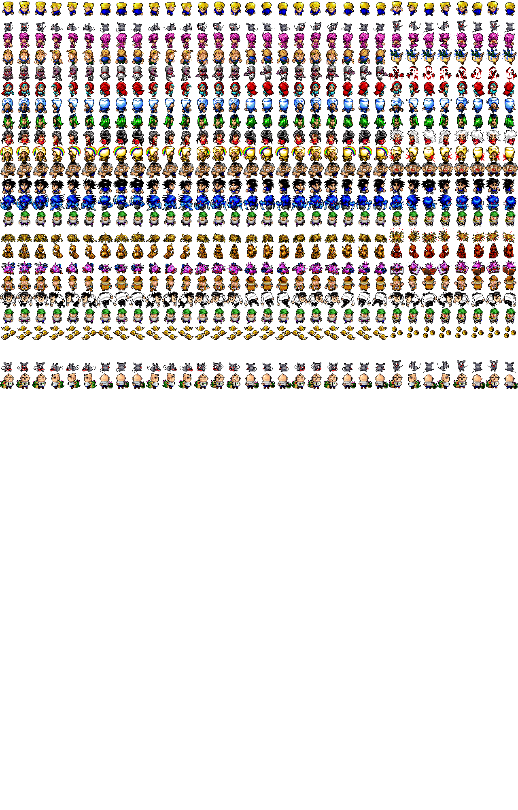
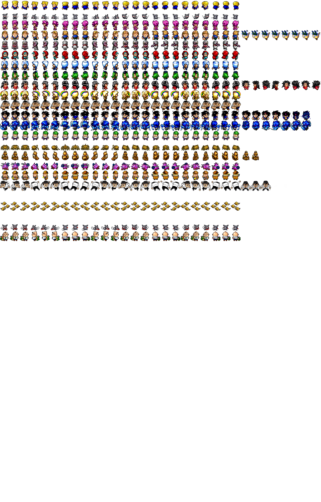

まず練習として、第7部の第1〜2話に出てきた「ただのスリ」を追加してみます
ホテルの外の1Fに敵キャラを追加しよう
画像の準備
ソースコードといっしょにimg_enemy4a.gif、img_enemy4b.gifという画像をGETしたはずです
お母さんヤギと警備員の西古の間にただのスリの画像を追加しましょう
やり方は任せます


キャラ情報の追加
キャラクターの設定は「*label_626」と書いてある行と「*label_627」と書いてある行の間にあります(104156行目から106613行目あたり)
「*label_627」と書いてある行の上に、以下のようにコードを追加してください
文字が赤くなっている部分が、追加して欲しいコードです
var_972 = 4
var_1619 = 341
var_1655 = "・地面に砂DIOを作ってくれるぞ"
var_1656 = ""
var_1657 = ""
var_1658 = ""
}
if ( var_437 == 167 ) {
var_891 = "ただのスリ"
var_967 = 5
var_968 = 5
var_954 = 5
var_438 = 1
var_1637 = 0
var_1654 = 10
var_972 = 1
var_1619 = 701
var_1655 = "・小銭を盗むぞ"
var_1656 = "・銃を撃つぞ"
var_1657 = ""
var_1658 = ""
}
return
*label_627
dim var_977, 20
if ( var_62 == 1 ) {
gosub *label_628
}
if ( var_62 == 2 ) {
gosub *label_629
}
「var_437 == XXX」とありますが、XXX はキャラクターのIDを表しています
お母さんヤギと西古の間に画像を入れたので、167 と設定しています
カタツムリと虫食いでないの間に画像を入れたなら 171です
「var_891 = "ただのスリ"」という行でキャラの名前が設定されます
同じ要領で名前、攻撃、防御、経験値、体力、不明な値、ドロップ率、属性(人間、スタンド等)、番号(百の位は部数)、キャラの説明、を設定します
ここには好きな数値を設定してかまいません
キャラのモーション設定
なんと、今の段階では不要です
もうすこし詳しい情報はオマケとして下に書きました
キャラの出没箇所設定
キャラクターが出現するようにしましょう
キャラクターの出没箇所は「*label_627」と書いてある行から「*label_635」と書いてある行の間に書いてあります(106667行目以降)
とくに「*label_628」と書いてある行以降が「ホテルの外に出現するキャラ」を設定するコードです
同様にlabel_629以降が「レクイエムの大迷宮」、label_630が「ディアボロの試練」といった感じです
「*label_628」と書いてある行の下に、以下のようにコードを追加してください
if ( var_94 == 7 ) {
var_977 = 90, 90, 90, 90, 88, 88, 27
var_2917 = rnd(7)
var_953 = var_977(var_2917)
}
return
*label_628
if ( var_91 == 1 ) {
var_977 = 1, 5, 167
var_2917 = rnd(3)
var_953 = var_977(var_2917)
}
if ( var_91 == 2 ) {
var_977 = 147, 1, 5, 167
var_2917 = rnd(4)
var_953 = var_977(var_2917)
}
if ( var_91 == 3 ) {
var_977 = 93, 2, 147, 5
var_2917 = rnd(4)
var_953 = var_977(var_2917)
}
var_91は階数を表していています
var_977 = XX, YYにキャラクターのIDを追加し、その個数にあわせてrnd(ZZ)の中の数値を変えるだけで、ダンジョンの何階にどの敵が出てくるかを設定できます
つまり上のように書き換えることで、ホテルの外の1Fと2Fにただのスリが出現するようになったということです
ちなみに、rndは「ランダム」の略です。設定したIDから、ランダムにひとつ選ぶということです
コンパイルしましょう
ここまでを実装するだけで、敵キャラが追加されるはずです
とは言っても、殴るしかしてきません。銃を持ってるのに撃ってきません
次回は銃を撃たせる処理を追加します
オマケ (ちょっと難易度が高めの話)
察しの良い方なら気づいているとおもいますが、img_enemy4a.gifには追加できるキャラに限りが有ります
27キャラぶん追加すれば、そこでオシマイのように見えます。
安直にimg_enemy5a.gifという画像を作っただけではそもそも読み込んでもらえません
まず画像を読みこませるために1100行目あたりに下のコードを追加してください
順序はさほど問題ではないので、それらしい所に好きに入れてください
buffer 32
picload "img_enemy5a.gif"
buffer 33
picload "img_enemy5b.gif"
このコードを追加したところで、img_enemy5a.gifという画像が読み込まれただけではキャラが増えません
キャラクターのIDにあわせて画像をチョイスする処理を追加しなければならないです。
その処理がどこに書いてあるかというと、*label_567のあたりです(85701行目のあたり)
以下のようなコードを「*label_567」の後に追加してください
var_2592 = var_83(var_1641, 2) - 2
if ( var_2592 < 0 ) {
var_2592 = 0
}
var_1642 = 1
*label_567
if ( var_1642 == 1 ) {
if ( var_83(var_1641, 0) >= 200 & var_83(var_1641, 0) < 350 ) {
var_965 = 32
var_1826 = 33
var_966 = var_83(var_1641, 0) - 200
}
if ( var_83(var_1641, 0) < 50 ) {
var_965 = 6
var_1826 = 15
var_966 = var_83(var_1641, 0)
}
var_83は既に出現しているキャラクターのデータが入った二重配列です
var_83(var_1641, 0)は、キャラクターのIDです
これで、img_enemy5a.gifを追加したうえでIDが200以上の敵を追加することが可能になります
戻る
次はただのスリに銃を実装します